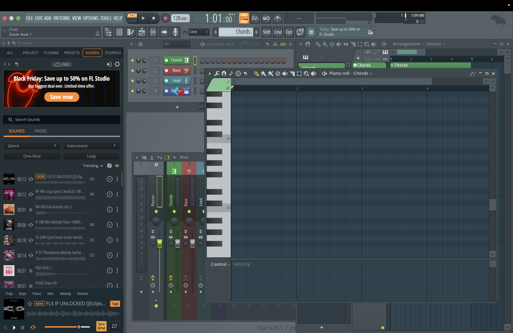

Find the channel button labeled Drums
Cyan: first prediction. Red: final prediction.

{
"instruction": "Find the channel button labeled Drums",
"image_width": 1512,
"image_height": 982,
"point": {
"x": 530.02,
"y": 270.55
},
"strategy": "panel",
"model": "accounts/yuxinz721-ofi0hn0kj3/deployments/h0xbbw9t",
"calls": [
{
"point": {
"x": 521.64,
"y": 268.086
},
"raw_response": "{\n \"visible\": true,\n \"panel\": \"Channel Rack\",\n \"entity\": \"Drums\",\n \"control\": \"channel-name button\",\n \"evidence\": \"In the Channel Rack, the fourth row's name button reads 'Drums' with a drum icon, distinct from rows Chords, Bass, and Lead.\",\n \"region\": {\n \"left\": 322,\n \"top\": 261,\n \"right\": 412,\n \"bottom\": 286\n },\n \"anchor\": {\n \"left\": 322,\n \"top\": 262,\n \"right\": 378,\n \"bottom\": 285\n },\n \"point\": {\n \"x\": 345,\n \"y\": 273\n }\n}",
"latency_seconds": 4.19201966599212,
"usage": {
"completion_tokens": 749,
"prompt_tokens": 1796,
"total_tokens": 2545,
"completion_tokens_details": {
"accepted_prediction_tokens": null,
"audio_tokens": null,
"reasoning_tokens": 545,
"rejected_prediction_tokens": null
},
"prompt_tokens_details": {
"audio_tokens": null,
"cache_write_tokens": null,
"cached_tokens": 0
},
"output_tokens_details": {
"reasoning_tokens": 545
}
},
"stage": "panel_plan",
"prompt": "Locate the requested visible FL Studio control in this 1512x982 screenshot. Use coordinates from 0 to 1000 relative to the image width/height, measured from the top-left.\nInstruction: Find the channel button labeled Drums\nUse only visible evidence. Preserve the exact named channel, track or plugin; do not substitute Drums for Snare or assume a hidden target is visible.\nDistinguish Channel Rack, Mixer, Playlist, Piano roll, Browser, toolbar, plugin windows, dialogs and menus. Match the requested function and entity.\nChannel Rack rows have separate enable, pan, volume, routing and channel-name controls. The channel-name button opens its settings/plugin. Channel volume is not the enable indicator, pan knob, or routing number.\nIdentify the relevant panel and exact named entity before predicting the control. Choose a region that retains its label/header and adjacent controls, not a tight crop of the point. Use visible=false if the requested target cannot be identified; never substitute a different entity. Return only JSON with keys visible (boolean), panel, entity, control, evidence (short visible facts), region, anchor, point. region and anchor use {left,top,right,bottom}; point uses {x,y}. anchor is the visible entity label/header box, or null if unnecessary. For visible=false, region, anchor and point must all be null.",
"image_sizes": [
[
1512,
982
]
],
"image_hashes": [
"112f8bac3c7104cba4c32c62636551f934e7d52c37092b998c9164afacafb9b1"
],
"finish_reason": "stop",
"error": null
},
{
"point": {
"x": 104.04,
"y": 45.1
},
"raw_response": "{\"x\":340,\"y\":550}",
"latency_seconds": 2.064853999996558,
"usage": {
"completion_tokens": 441,
"prompt_tokens": 344,
"total_tokens": 785,
"completion_tokens_details": {
"accepted_prediction_tokens": null,
"audio_tokens": null,
"reasoning_tokens": 425,
"rejected_prediction_tokens": null
},
"prompt_tokens_details": {
"audio_tokens": null,
"cache_write_tokens": null,
"cached_tokens": 0
},
"output_tokens_details": {
"reasoning_tokens": 425
}
},
"stage": "panel_localize",
"prompt": "Locate the requested control in this 306x82 crop. Use coordinates from 0 to 1000 relative to the image width/height, measured from the top-left. Coordinates refer ONLY to this crop. Instruction: Find the channel button labeled Drums\nUse only visible evidence. Preserve the exact named channel, track or plugin; do not substitute Drums for Snare or assume a hidden target is visible.\nDistinguish Channel Rack, Mixer, Playlist, Piano roll, Browser, toolbar, plugin windows, dialogs and menus. Match the requested function and entity.\nChannel Rack rows have separate enable, pan, volume, routing and channel-name controls. The channel-name button opens its settings/plugin. Channel volume is not the enable indicator, pan knob, or routing number.\nProposed context (verify visually): panel=Channel Rack; entity=Drums; control=channel-name button. Return only {\"x\":number,\"y\":number}, or {\"visible\":false} if the exact target is absent.",
"image_sizes": [
[
306,
82
]
],
"image_hashes": [
"d4d08a1952a6cceb11730e7de68d53581085645bf94cf807f52927e2e83b3d58"
],
"finish_reason": "stop",
"error": null
}
],
"latency_seconds": 6.298226624989184,
"status": "ok",
"metadata": {
"coordinate_space": "normalized_1000",
"knowledge_version": "fl-manual-v1",
"knowledge_sources": [
"https://www.image-line.com/fl-studio-learning/fl-studio-online-manual/html/channelrack.htm",
"https://www.image-line.com/fl-studio-learning/fl-studio-online-manual/html/mixer.htm"
],
"knowledge": "Use only visible evidence. Preserve the exact named channel, track or plugin; do not substitute Drums for Snare or assume a hidden target is visible.\nDistinguish Channel Rack, Mixer, Playlist, Piano roll, Browser, toolbar, plugin windows, dialogs and menus. Match the requested function and entity.\nChannel Rack rows have separate enable, pan, volume, routing and channel-name controls. The channel-name button opens its settings/plugin. Channel volume is not the enable indicator, pan knob, or routing number.",
"plan": {
"visible": true,
"panel": "Channel Rack",
"entity": "Drums",
"control": "channel-name button",
"evidence": "In the Channel Rack, the fourth row's name button reads 'Drums' with a drum icon, distinct from rows Chords, Bass, and Lead.",
"region": {
"left": 322.0,
"top": 261.0,
"right": 412.0,
"bottom": 286.0
},
"anchor": {
"left": 322.0,
"top": 262.0,
"right": 378.0,
"bottom": 285.0
},
"point": {
"x": 345.0,
"y": 273.0
}
},
"crop": {
"bounds": [
478,
248,
631,
289
],
"output_size": [
306,
82
],
"scale": 2.0
},
"candidates": {
"initial": {
"x": 521.64,
"y": 268.086
},
"refined": {
"x": 530.02,
"y": 270.55
}
}
}
}